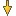
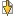

Walking Through Differences


|
Walking Through Differences |
|
|
The Next Difference Section  and Previous Difference Section commands help you step through all the differences in your files, and all your files with differences. In the Text Compare, click Next Difference Section to position at the next range of lines with differences or Previous Difference Section to go back to the previous range of lines with differences. The arrow icons will either be disabled or change color from bright yellow to dull yellow to indicate that there are no more differences in that direction. To configure what happens when there are no more differences, see File View Next Difference Options. In Text Compare sessions, the current file format controls whether Next and Previous are on a line-by-line basis or a section-by-section basis. To access the current file format from a Text Compare session, select Session > Session Settings > Importance and click the Edit Grammar button. Then, on the Text Format dialog's Misc tab, toggle Lines are independent. You can use Next Difference and Previous Difference to position on individual differences in long lines with multiple differences. To jump directly to the next files with differences in the associated folder view, from the Search menu select Next Difference Files , or Previous Difference Files . |